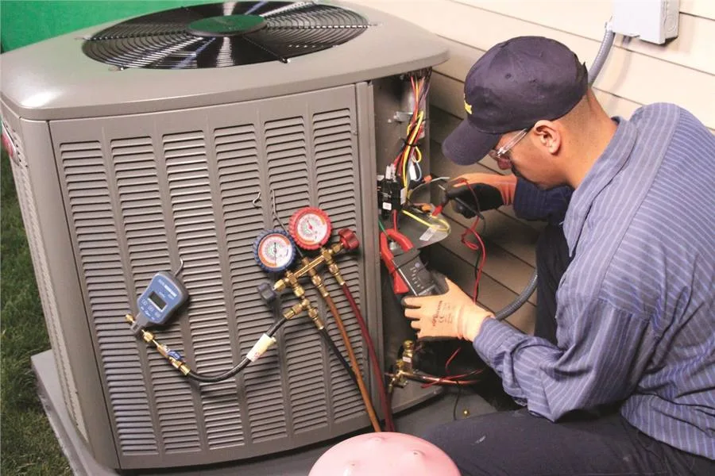

Google Maps SEO & LSA for HVAC Companies
When the AC dies in July or the heat goes out in January, homeowners search "AC repair near me" or "heating repair near me" and call whoever shows up first. We get HVAC companies into that position, and keep the leads exclusive to one company per market.

Why Google Maps Matters for HVAC
HVAC has a clear seasonal pattern: AC repair searches typically peak in summer, heating repair searches peak in winter, and installs and maintenance work fill in year-round. That means a strong, consistent Google Maps and Local Services Ads presence needs to hold up through both peak windows — not just whichever season you're in when you start.
HVAC repairs are also often urgent, which puts the same weight on speed and trust signals — reviews, response time, Google Guarantee status — that other emergency-driven trades see.
What We Do for HVAC Companies
Google Business Profile built for HVAC
Categories, services, and photos optimized around AC repair, heating repair, and installs — not a generic contractor template.
Seasonal search targeting
We adjust targeting to match seasonal demand shifts, so you stay visible for AC searches in summer and heating searches in winter.
Review strategy
Consistent, recent reviews build the trust homeowners look for before letting a technician into their home for an urgent repair.
LSA with the Google Guarantee
Local Services Ads with the Google Guarantee badge for homeowners who need a technician today.
We're compiling a full HVAC case study — for now, see our results from other home service trades or try the 7-day free trial to see the process on your own business.
FAQs — HVAC Google Maps SEO & LSA
How does Google Maps SEO work for HVAC companies?
We optimize your Google Business Profile and website around the searches homeowners use for AC repair, heating repair, and system installs, so you rank in the Google Maps 3-pack for your service area.
Is Local Services Ads worth it for HVAC?
Yes, especially during peak cooling and heating season when search volume is highest. LSA puts you at the top of Google with the Google Guarantee badge, and you pay only for qualified leads.
Does HVAC demand change by season?
Yes. AC repair searches typically peak in summer and heating repair searches peak in winter, with installs and maintenance spread more evenly. We help you stay visible through both peak windows.
How many HVAC companies do you work with per market?
One. We only work with one HVAC company per service area, so the visibility we build for you isn't shared with local competitors.